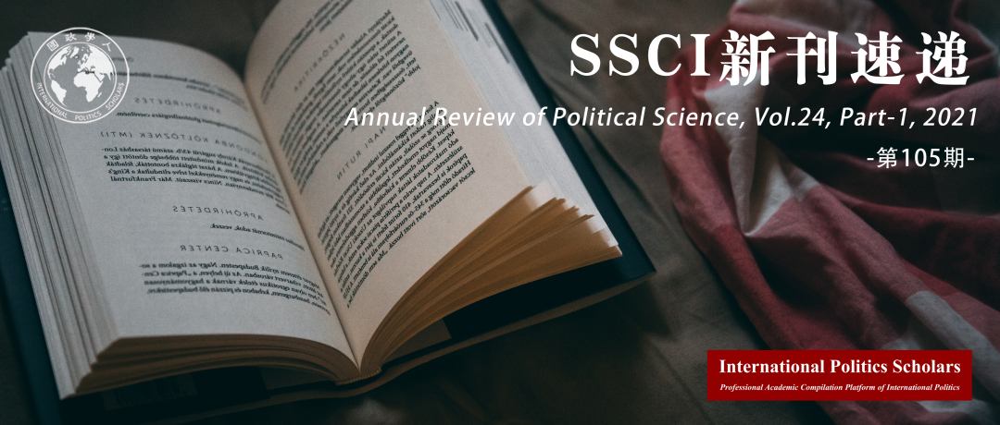

收录于合集
#新刊速递 123 个
#政治科学年度评论 3 个

期刊简介
《政治科学年度评论》（ Annual Review of Political Science ）是一份1998年起发行的同行评审学术期刊，由Annual Reviews出版。该期刊每年出版1次，内容为对政治学研究重要进展的综述。据2021年发布的期刊引证报告指，《政治科学年度评论》的影响因子为8.091，在182份政治科学类的期刊排名第2位。

本期目录
1. 外部有效性
External Validity
2. 将机器学习用于社会科学：一个基于不可知前提的方法
Machine Learning for Social Science: An Agnostic Approach
3. 全球化逆流的冲击
The Backlash Against Globalization
4. 有关黑人权力运动的政治学
The Politics of the Black Power Movement
5. 欧洲的民粹主义、民主和政党制度变革
Populism, Democracy, and Party System Change in Europe
01
外部有效性
题目： External Validity
作者： Michael G. Findley，美国德克萨斯大学奥斯汀分校政府系；菊田恭輔（Kyosuke Kikuta），大阪大学国际公共政策研究科。
摘要： 外部有效性有助于我们把握从给定研究样本中得出的推论对更广泛的人群或其他目标人群的适用程度。社会科学家经常援引外部有效性这一理想概念，但他们很少试图做出严格且可信的外部有效性推论。近年来，以方法论为导向的学者们对外部有效性的各个组成部分进行了一系列研究，而本文回顾并系统地梳理了其中的许多见解。我们首先阐明了外部有效性的核心概念维度，并以一个简单的形式来说明外部有效性的重要性。然后，我们提出了模型效用、范围合理性和规范可信度这三个评估标准，以统合关于外部有效性的不同论点。最后，我们提出了一个可行的愿望，即学者应补充现有的报告标准，从而例行地讨论外部有效性问题。我们希望这些评价和报告标准有助于重新平衡科学研究，从而使得当前学界对因果推断的痴迷可以被对普遍知识的同等兴趣所补充。
External validity captures the extent to which inferences drawn from a given study’s sample apply to a broader population or other target populations. Social scientists frequently invoke external validity as an ideal, but they rarely attempt to make rigorous, credible external validity inferences. In recent years, methodologically oriented scholars have advanced a flurry of work on various components of external validity, and this article reviews and systematizes many of those insights. We first clarify the core conceptual dimensions of external validity and introduce a simple formalization that demonstrates why external validity matters so critically. We then organize disparate arguments about how to address external validity by advancing three evaluative criteria: model utility, scope plausibility, and specification credibility. We conclude with a practical aspiration that scholars supplement existing reporting standards to include routine discussion of external validity. It is our hope that these evaluation and reporting standards help rebalance scientific inquiry, such that the current obsession with causal inference is complemented with an equal interest in generalized knowledge.
02
将机器学习用于社会科学：一个基于不可知前提的方法
题目： Machine Learning for Social Science: An Agnostic Approach
作者： Justin Grimmer，斯坦福大学政治科学系教授及胡佛研究所高级研究员；Margaret E.Roberts，加州大学圣地亚哥分校副教授；Brandon M. Stewart，普林斯顿大学社会学系助理教授。
摘要： 近年来，可用于社会科学研究的数据日趋丰富。新形式的数据可以从根本上改变社会科学家对社会现象进行观测的能力。学界不需再依赖于耗时的社会调查和档案搜集，而可以利用数据科技一次性对数百万条记录和档案进行分析。今天越来越多的社会科学家将机器学习用于预测和数据降维。作者认为这将使学界重新评估社会科学中的一些经典模型。在本文中，作者提出了一种基于不可知前提之上的使用机器学习进行社会科学推理的方法。其中“不可知前提”的意思是作者认为当使用机器学习时，在许多情况下研究者无法找到可以用于所有数据集的最佳模型。在这种情况下，作者鼓励研究人员使用机器学习来根据特定的研究课题不断优化他们的研究模型。在文中，论证了当今丰富的数据可以在什么程度上改变学界之前的演绎思维方式。但同时，作者也认为机器学习依然应被看为一种研究方法，而不是能解决所有研究问题的灵丹妙药。只有当研究者将机器学习恰当的适用于自己的研究课题时，机器学习才能发挥最高的效用。
In recent years, the data available for social science research has become more abundant. New forms of data can fundamentally change social scientists’ ability to observe social phenomena. The academic community no longer needs to depend on time-consuming social surveys and file collection, but can use data technology to analyze millions of records and files at once. Today, more social scientists use machine learning for prediction and data dimension reduction. The author believes that this will enable the academic community to re-evaluate some classic models in social sciences. In this article, the author proposes a method for social science reasoning based on Agnostic approach when using machine learning. The " Agnostic approach " means that the author believes that when using machine learning, in many cases, researchers cannot find the best model that can be used for all data sets. In this case, the author encourages researchers to use machine learning to continuously optimize their research models according to specific research topics. In this article, the author demonstrated to what extent the abundant data can change the deductive thinking of the academic circles. But at the same time, the author also believes that machine learning should still be seen as a research tool, rather than a panacea that can solve all standing social science questions. Only when researchers apply machine learning appropriately to their research topics, can machine learning provide its highest performance.
03
全球化逆流的冲击
题目： The Backlash Against Globalization
作者： Stefanie Walter，苏黎世大学政治学系教授。
摘要： 近年来，世界上反对全球化的呼声越来越高。本文回顾了全球化逆流的性质、原因和后果。恰恰与流行的说法相悖，本文认为对全球化的强烈反对与公众舆论的大幅波动无关，这实际上是全球化政治化的结果。对全球化持怀疑态度的行为体的影响力越来越大，导致了更加广泛的保护主义、孤立主义和民族主义政策，其中一些政策在根本上威胁到了当代国际秩序的支柱。物质性和非物质性因素都在推动对全球化的强烈反对，这些因素互相影响、互相协调。全球化反弹带来的后果取决于社会行为体、国家政府和国际决策者的反应。它们的反应要么是让步并且强化反全球化的趋势，要么就是抵制这种趋势。了解这些动态将是未来研究的重要任务。
In recent years, the world has seen a rising backlash against globalization. This article reviews the nature, causes, and consequences of the globalization backlash. It shows that, contrary to a popular narrative, the backlash is not associated with a large swing in public opinion against globalization but is rather a result of its politicization. The increasing influence of globalization-skeptic actors has resulted in more protectionist, isolationist, and nationalist policies, some of which fundamentally threaten pillars of the contemporary international order. Both material and nonmaterial causes drive the globalization backlash, and these causes interact and mediate each other. The consequences are shaped by the responses of societal actors, national governments, and international policy makers. These responses can either yield to and reinforce the global backlash or push back against it. Understanding these dynamics will be an important task for future research.
04
有关黑人权力运动的政治学
题目： The Politics of the Black Power Movement
作者： James Lance Taylor，美国圣弗朗西斯科大学（University of San Francisco）政治学系教授，前系主任；前任美国黑人政治学家全国性会议（NCOBRS）主席。
摘要： 与历史学家、社会学家和从事黑人研究的学者所作的分析相比，政治学家对于黑人权力运动（BPM）的分析令人遗憾得没有得到重视。这一现象是值得我们关注的。这种相对忽视一定程度上是由于政治学家对于采用严格的理论或方法来分析作为黑人权力运动核心意识形态的黑人民族主义保持谨慎。在这篇文章中，作者强调了政治学家对于黑人权力运动研究所作出的一些重大贡献，同时也探讨了进一步研究和考察美国政治与国际政治中的这一阶段将面临的挑战和机遇。
In notable ways, analysis of the Black Power Movement (BPM) by political scientists has been woefully neglected in comparison to analyses proffered by historians, sociologists, and Black Studies scholars. This comparative neglect is partly owed to political science’s reticence to meaningfully engage the ideological locus of the BPM, black nationalism, through rigorous theoretical or methodological analysis. In this review, I highlight some of the major contributions of political scientists to the analysis of the BPM while exploring some of the challenges and opportunities for further study and examination of this singular period in US and international politics.
05
欧洲的民粹主义、民主和政党制度变革
题目： Populism, Democracy，and Party System Change in Europe
作者： Milada Anna Vachudova，北卡罗来纳大学政治学系副教授。
摘要： 民粹主义如何改变了欧洲的政党制度？作者调查了民粹主义的种类、其支持的来源以及吸引选民的不同方式。作者利用“教堂山专家调查”的数据，探讨民粹主义政党是否加剧了文化层面的竞争，加速了主流政党的衰落，并加剧了极化现象。作者认为，虽然左翼和中间民粹主义政党颠覆了现有的竞争结构，但对政治竞争的实质和国内政治的轨迹影响最大的是一直以来都存在的右翼保守主义政党，它们利用民族民粹主义改造进行自我改造。作者考察了执政党的行为，并认为民粹主义种类会塑造我们对于民粹主义政党统治状况的预期。过去十年里，左翼民粹主义政党的执政倾向于变得更加寻常，有时甚至放弃了反体制和反欧盟的立场。而执政的右翼民族民粹主义政党则通过呼吁凸显“我们与他们”的区别、散布虚假信息和实施民主倒退以追求更大的权力。
How has populism transformed party systems in Europe? I survey the varieties of populism, the sources of their support and the different ways that they appeal to voters. I use data from the Chapel Hill Expert Survey to explore whether populist parties are intensifying competition on the cultural dimension, accelerating the decline of mainstream parties, and increasing polarization. I argue that while left and center populist parties have upended existing structures of competition, it is longstanding conservative parties, remodeled using ethnopopulism, that have been the most consequential for the substance of political competition and the trajectory of domestic politics. I consider the behavior of incumbents and argue that varieties of populism should shape our expectations of what happens when populists rule: While left populist parties in power over the last decade have tended to become more ordinary, sometimes even shedding antiestablishment and anti-EU positions, ethnopopulist parties in power have used harsh “us-versus-them” appeals, misinformation, and democratic backsliding in their pursuit of more power.
编译 | 刘培晨 闫一苇 王星澳 谭伟业 郑敖天
审校 | 李博轩 黄慧彬 阮辰阳 邵良 姚寰宇
排版 | 王慧瑜 陈炜昊

国政学人
支持学术公益与知识传播
微信扫一扫赞赏作者 __赞赏
已喜欢，对作者说句悄悄话
取消 __
发送给作者
发送
最多40字，当前共字
上一页 1/3 下一页
长按二维码向我转账
支持学术公益与知识传播
受苹果公司新规定影响，微信 iOS 版的赞赏功能被关闭，可通过二维码转账支持公众号。